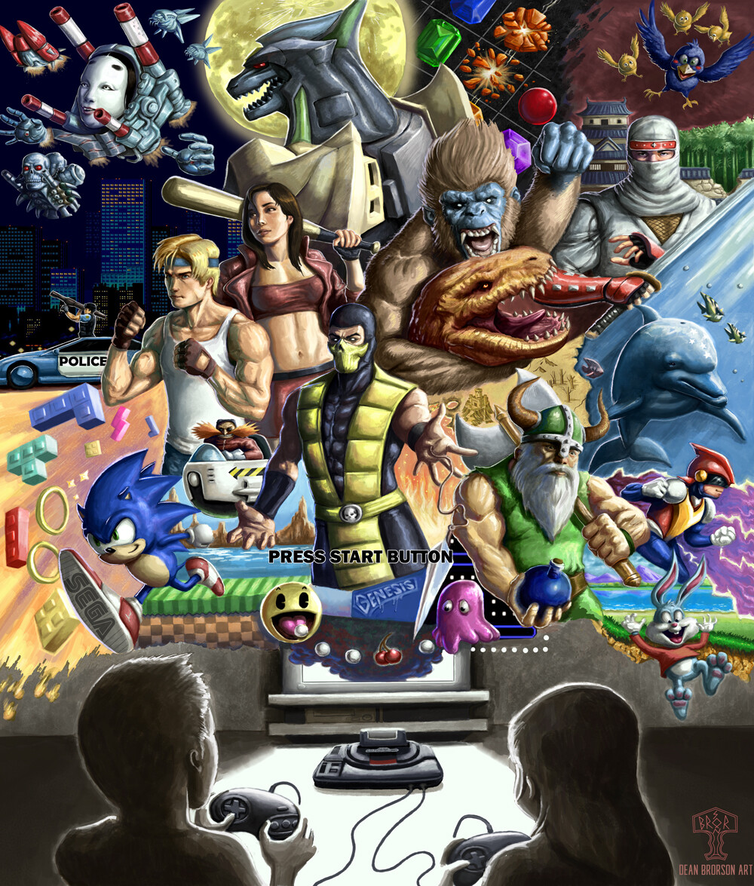

Not Just a Studio.
A Perspective.
Current Scoring Leaders is the service layer. Fresh Water is the identity behind it. The same philosophy, discipline, and craft drive both.
What Is Fresh Water?
Clarity. Purification. Essential creative force.
The "materialism of the physical" has distorted how music is made, consumed, and valued. Mass production over craft. Algorithms over taste. Templates over truth. Fresh Water exists outside that system. Every note is composed, not assembled. Every track is a statement, not a product.
Two Forces, One Output
Every project engages both halves of the creative engine.
The Philosopher-Warrior
Every composition begins with a question. What emotional architecture does this story need? The philosopher maps the terrain. The warrior executes with precision. Late nights. Revision discipline. Structural analysis. No shortcuts.
The Alchemical Seer
Sound transforms. A sample becomes a motif. A mistake becomes a signature. The seer sees what could be, not just what is. This is where genre conventions break and something new emerges.
Why Trust a New Studio?
A fair question. Here is the honest answer.
Craft Over Flash
Every track is built from the ground up. No templates, no stock loops, no shortcuts. Original composition, not assembly.
Full Licensing
Proper documentation, indemnification, exclusive or non-exclusive terms. No gray areas, no surprises.
Revision Discipline
We do not bill by the revision. We bill by the project. Your vision gets the iterations it needs.
Direct Access
You work directly with the composer. No account managers. No middlemen. One point of contact from brief to delivery.